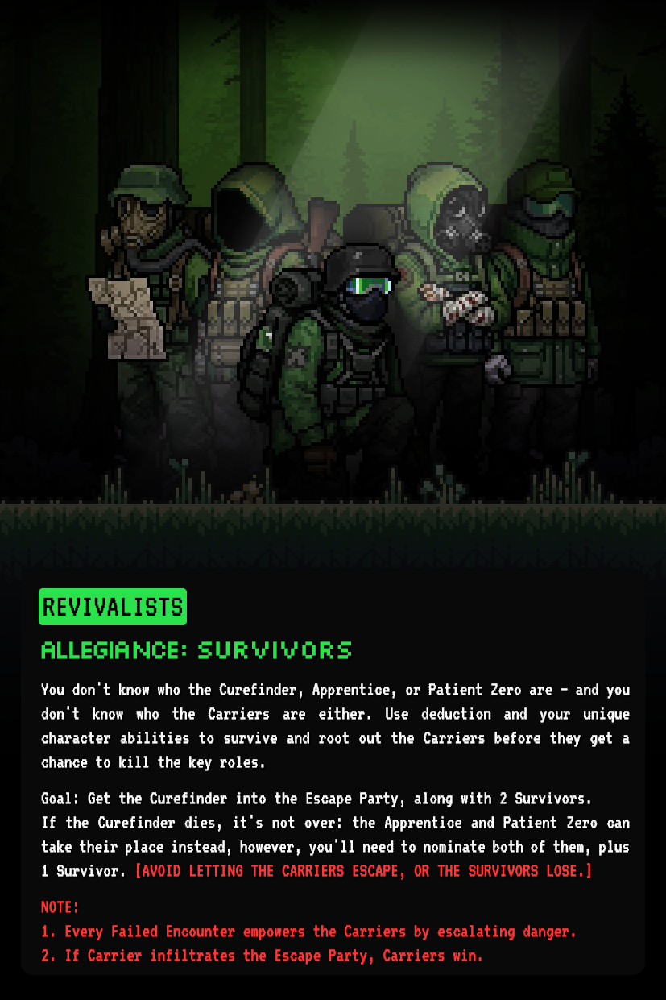
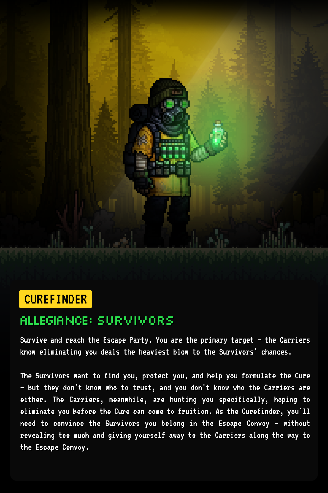
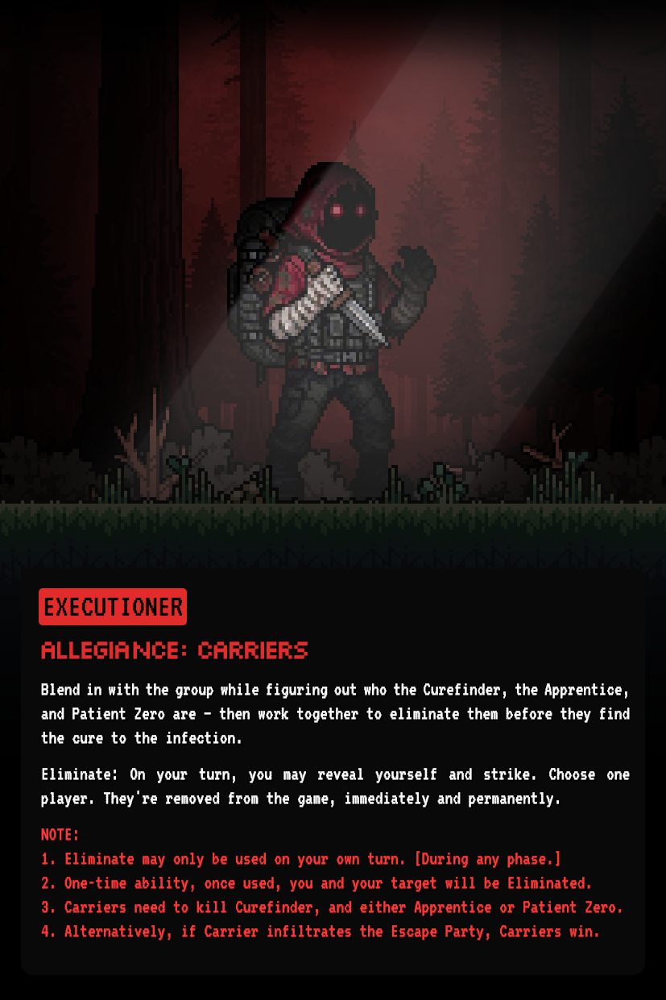
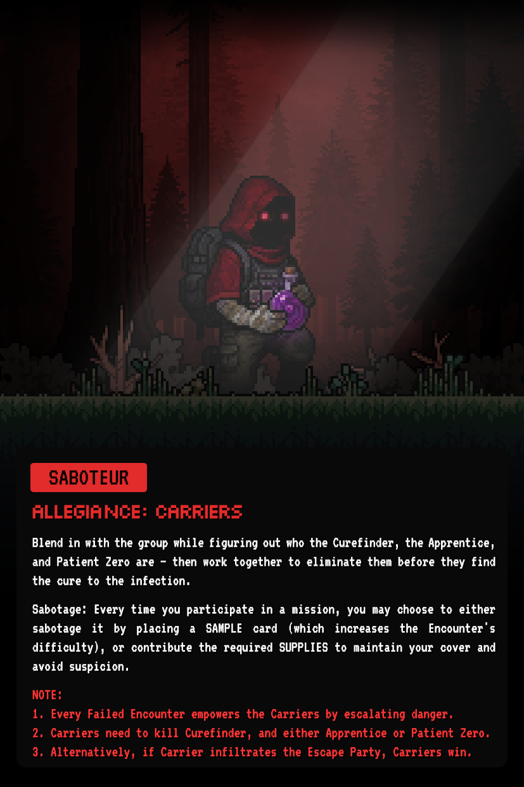
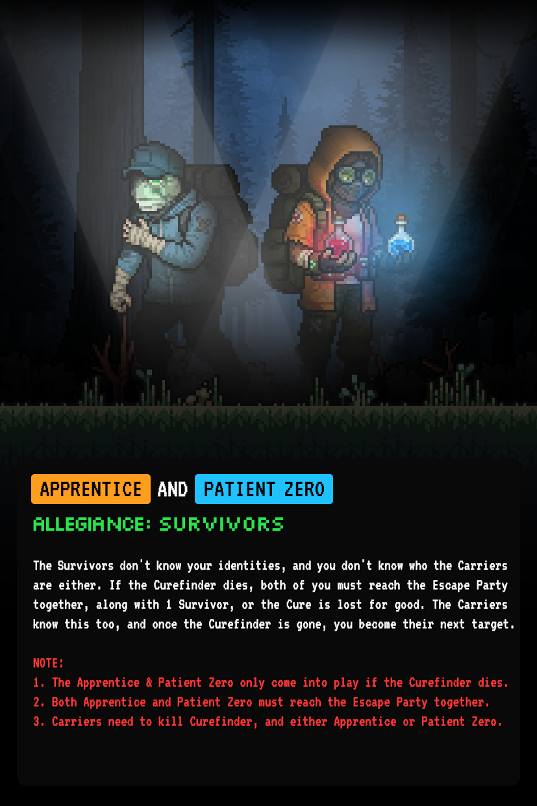

REVIVALIST
Your mission is to protect the Custodians. You don't know who the Curefinder, Apprentice, or Patient Zero are — and you don't know who the Carriers are either. Use deduction and your unique character abilities to survive and root out the Carriers before they get a chance to kill the key roles.
Goal: Get the Curefinder into the Escape Party, along with 2 Survivors. If the Curefinder dies, it's not over — the Apprentice and Patient Zero can take their place instead, but you'll need to nominate both of them, plus 1 Survivor.

CUREFINDER
You hold the formula to end the infection. Escape safely to create the cure. You are the primary target — the Carriers know eliminating you deals the heaviest blow to the Survivors' chances.
The Survivors want to find you, protect you, and help you formulate the Cure — but they don't know who to trust, and you don't know who the Carriers are either. You'll need to convince the Survivors you belong in the Escape Convoy, without revealing too much and giving yourself away to the Carriers along the way.

EXECUTIONER
You are infected, hiding among the Survivors. Your goal is to eliminate the Custodians before they escape. Blend in with the group while figuring out who the Curefinder, the Apprentice, and Patient Zero are — then work together with the other Carriers to eliminate them before they find the cure to the infection.

SABOTEUR
You are infected, hiding among the Survivors. Your goal is to eliminate the Custodians before they escape. Blend in with the group while figuring out who the Curefinder, the Apprentice, and Patient Zero are — then work together with the other Carriers to eliminate them before they find the cure to the infection.

APPRENTICE & PATIENT ZERO
The Apprentice and Patient Zero only come into play if the Curefinder dies. The Survivors don't know your identities, and you don't know who the Carriers are either.
If the Curefinder dies, both of you must reach the Escape Party together, along with 1 Survivor, or the Cure is lost for good. The Carriers know this too, and once the Curefinder is gone, you become their next target.